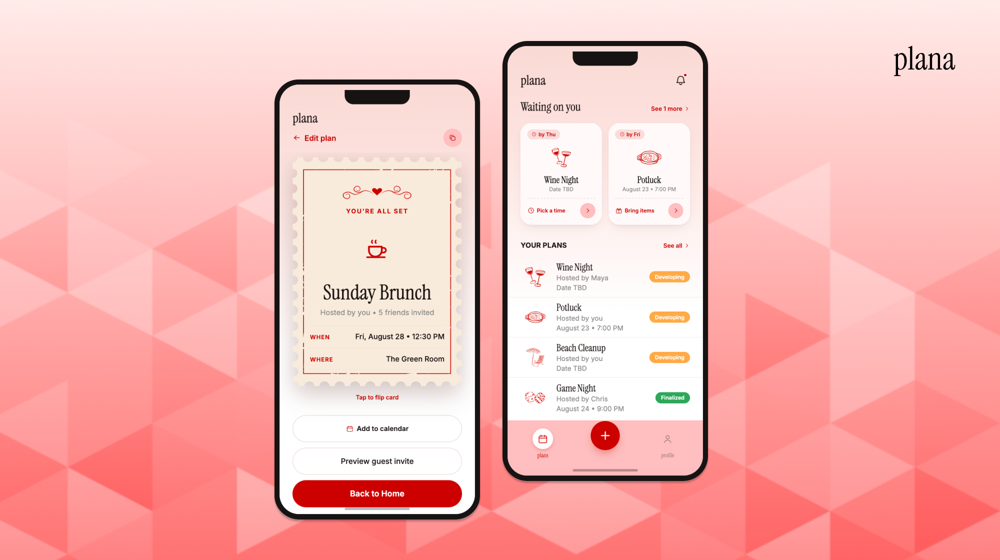

I'm Nikki, a UI/UX Designer
With a background in computer science and studio art, I design research-informed products for startups, civic tech, and consumer platforms, turning complex ideas into experiences that feel human, useful, and trustworthy.
Featured Work

01 · Internship
Sorcea Labs
Personalized Skincare & Market Intelligence Platform
A beauty-tech startup navigating a rebrand across two audiences. I redesigned the B2B business site for partner credibility and the B2C skincare platform to build consumer confidence.

02 · Self-Directed
Plana
Event Planning App
Group plans get stuck in scattered group chats. I designed and vibe-coded a prototype that streamlines logistics and makes it easy to send fun invites for everything from casual hangouts to full-scale events.

03 · Self-Directed
Beli
Food Rating App
A food rating app with a friction gap in meal logging. I mapped the pain point through user research and designed Menu Search and Smart Autofill to reduce drop-off.

Password Protected
04 · Work in Progress
Project Dialogue
Social Media Platform
A 0→1 civic-tech platform rethinking how people talk across differences. As a product design intern, I drove MVP strategy, practice-first onboarding, AI conversation UX, and a full visual identity.